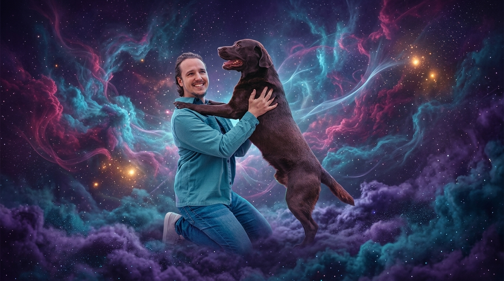

Verbundenheit auf allen Ebenen des Seins
Willkommen bei Sternenpfade. Ich begleite Tiere und Menschen mit schamanischer Begleitung, medialen Elementen und Bewusstseinsarbeit auf ihrem ganz individuellen Weg – im Diesseits und darüber hinaus.

Schamane & Gründer Sternenpfade
Die drei Dimensionen der Transformation
Eine tiefgehende, liebevolle und strukturierte Begleitung für unterschiedliche Lebensphasen.

Pfad der Tiere
Die Tiere sind das Herzstück von Sternenpfade. Ob durch schamanische Tierkommunikation oder SoulLink: Vertiefe die einzigartige Verbindung zu deinem Tiergefährten auf energetischer Ebene.
- ✨ Schamanische Tierkommunikation
- ✨ SoulLink
- ✨ Jenseitskontakt (exklusiv für Tiere)

Pfad der Menschen
Finde zurück in deine Mitte, löse alte Blockaden und stärke deine Selbstregulationskräfte mit medialer und schamanischer Präsenz- oder Fernarbeit, abgestimmt auf deine aktuelle Situation.
- ✨ Schamanische Fern- & Präsenzsitzung
- ✨ Hypnotische Begleitung
- ✨ Begleitung für Kinder

Pfad des Jenseits
Der sanfte Weg über die Schwelle. Eine behutsame mediale Begleitung in Abschiedsprozessen sowie reine Jenseitskontakte – für die Gewissheit, dass Liebe keine Grenzen kennt.
- ✨ Kontakt zu verstorbenen Tieren
- ✨ Kontakt zu verstorbenen Menschen
- ✨ Begleitung bei Abschiedsprozessen
Erfahrungen & Klientenstimmen
Was Menschen und ihre Gefährten auf den Sternenpfaden erleben durften.
Kostenloser Guide
Dein Tier mit dem Herzen verstehen
Was, wenn dein Tier dir insgeheim viel mehr sagen möchte, als du bisher hören kannst? Schnuppere unverbindlich in die faszinierende Welt der Tierkommunikation hinein! Dieser kostenlose Guide ist dein idealer Einstieg, um erste Einblicke in eine tiefere Seelenverbindung zu gewinnen und den Weg zur intuitiven Kommunikation spielerisch kennenzulernen.
- ✨ Seelenverbindung stärken
- ✨ Intuitive Kommunikation
- ✨ Inkl. Herzmeditation
- ✨ Ganzheitliche Sichtweise
Gemeinsam wachsen & lernen
In meinen Kreisen und Kursen schaffen wir einen sicheren, kraftvollen Raum, um Wissen zu teilen, Energie fließen zu lassen und das eigene Potenzial zu entfalten. Der Fokus liegt gleichermaßen auf Wissensvermittlung, praktischer Übung und gegenseitigem Halt.
Digitale Welt & Dienstleistungen buchen
Tierkommunikation ist mein Hauptangebot und Herzensweg. Entdecke hier die digitale Welt von Sternenpfade, buche deine individuellen Sitzungen direkt online oder stöbere in meinen Kursen zur eigenen Weiterentwicklung.
Kontakt & direkte Terminbuchung
Viele Wege führen zu den Sternenpfaden. Da Tierkommunikation mein Hauptangebot ist und viele Klienten dieses gerne direkt anfragen, biete ich dir hier den schnellsten Weg: Schreibe mir unkompliziert per WhatsApp für deine Buchung oder nutze das E-Mail-Formular.
Direkter Draht via WhatsApp
Du möchtest eine Tierkommunikation buchen oder hast eine kurze Frage? Schreib mir am besten direkt über WhatsApp.
Nachricht auf WhatsAppKontaktanfrage per E-Mail
Sende eine E-Mail an info@sternenpfade.at oder nutze das Formular: